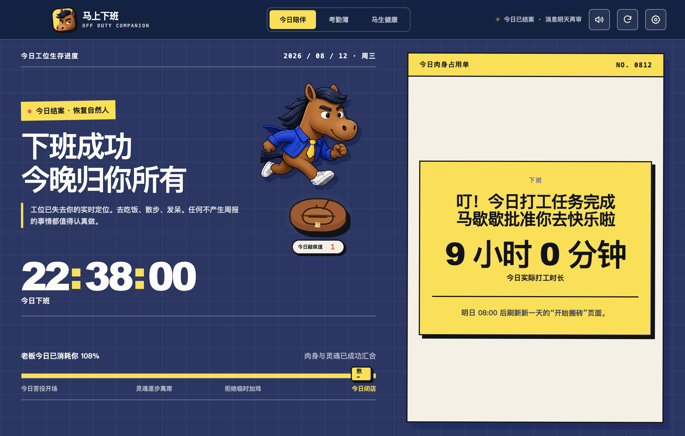

打工人桌面陪伴应用V2.4.6
任务疯狂轰炸，马歇歇催你下班
生活不止打工的待办，还有凉爽的夜晚。
不注册数据留在本机老板无权查看

19:00今日打烊
🔔马来催了
距离下班前 3h / 2h / 1h / 30m / 5m / 准点提醒✦12:00 催你吃饭✦加班后继续催离✦Icon 实时倒计时✦距离下班前 3h / 2h / 1h / 30m / 5m / 准点提醒
01 / 今日陪伴
从“我到工位了”陪你熬到“我要下班了”
早上看你一脸班味，中午催你先去吃饭，晚上盯着你别再免费加钟。它不帮老板提高效率，只负责提醒你还有生活。

02 / 下班提醒
到点不是失联，是该回到生活。
不用反复看钟，也不用打开应用。马歇歇会在关键时间主动提醒你；到了下班点，应用图标还会直接显示倒计时和加班时长。
- 下班前 3 小时起，越近提醒越及时
- Windows / macOS 即时通知，抬眼就能看到
- 应用图标实时显示倒计时与超时时长
18:55
正在演示下班前 5 分钟
马上下班 · 现在距离下班还有 5 分钟
每一次多余的双击，都可能成为今晚的新事故。
即时通知
不用打开应用，关键节点会主动弹出提醒。
03 / 马生健康
你每加一次班，马替你掉一格血。
你嘴上说“就一会儿”，身体可是一分钟都没忘。从活人微死到病床 ICU，再卷下去，马歇歇没等到年终奖，先等到了一块碑。


04 / 考勤簿 + 打工人格
记录日均工时，自动领取你的打工人格。
几点被工位捕获，几点终于恢复自由，这里都记着。马歇歇还会根据你的日均工时，自动识别一枚打工人格——不是荣誉，是工伤昵称。
工时越长，人格越离谱
8—9 小时班味轻度腌制
9—10 小时工位钉子户预备役
10—11 小时需求区常驻 NPC
11—12 小时人形加班包月卡
12—14 小时赛博拉磨永动马
14 小时以上年终奖赛博守灵人

 你都看到这了，
你都看到这了，还不准备下班？
05 / 现在开始
公司已经拥有你的白天，美丽的你值得享受美丽的夜晚。
免费下载 Windows x64 或 macOS Apple 芯片版。不需要账号，考勤只留在你的电脑里——放心，老板看不到你几点跑路。
Windows SHA-256 · bcfde9c439a10c483e267f1d94685f29e2655ec75bda9ad811cc89b7774cb338macOS SHA-256 · d1ad3372642a03a23d51b4d360539df23e292c499d5e208a4c8a54c02d06c0b6